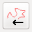
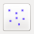
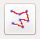
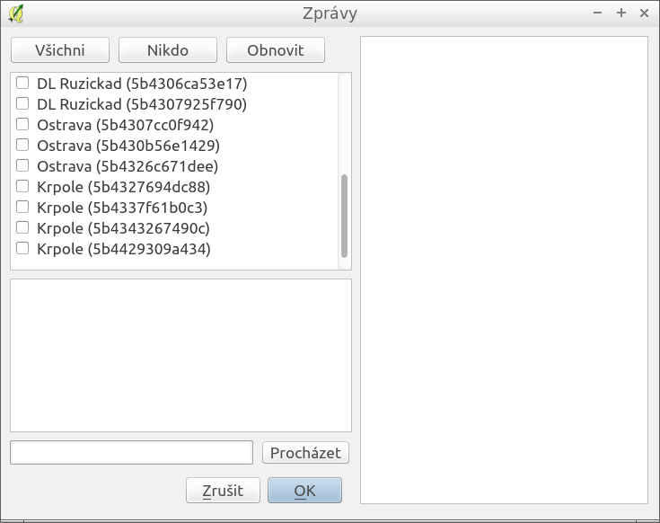
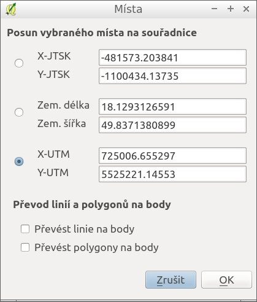

Aplikace má celou řadu dalších funkcí.
Pomocí tlačítka  je možné importovat data z GPS přijímače. Funkce aktuálně podporuje pouze nové přijímače, které připojují GPS jako USB zařízení. Do budoucna se nepředpokládá podpora starších zařízení.
Import dat je možný buď výběrem stop ze seznamu všech stop nebo ořezáním stop dle zadaného časového okna.
Pomocí tlačítka  je možné zobrazit poslední pozice pátračů, kteří jsou připojeni on-line. Tato funkce vyžaduje připojení k internetu.
Po zmáčknutí tlačítka je vrstva patraci aktualizována daty ze serveru. Zelenou ikonou jsou zobrazeni aktivní pátrači (log v posledních 5-ti minutách), bílou ikonou jsou zobrazeni neaktivní pátrači.
Pomocí tlačítka  je možné zobrazit stopy pátračů, kteří jsou připojeni on-line. Tato funkce vyžaduje připojení k internetu.
Po zmáčknutí tlačítka je vrstva patraci_lines aktualizována daty ze serveru.
Pomocí tlačítka je možné pátračům, kteří jsou připojeni on-line zaslat zprávu. Tato funkce vyžaduje připojení k internetu.

Pomocí tlačítka je možné upravovat body pozorování.

Vybraný bod je možné přesunout na souřadnice.
Místa zadaná liniemi je možno převést na body.
Místa zadaná plochami je možno převést na body.
Častou operací bude spojování menších sektorů do jednoho většího. Vhodný postup je následující:
Někdy bude nutné velký sektor rozdělit. Nejedná se o triviální operaci, proto pokud nemusíte, tak to nedělejte. Vhodný postup je následující: